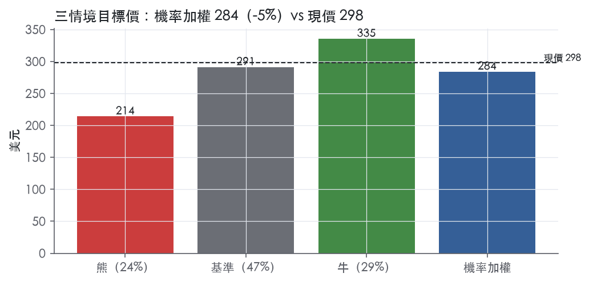
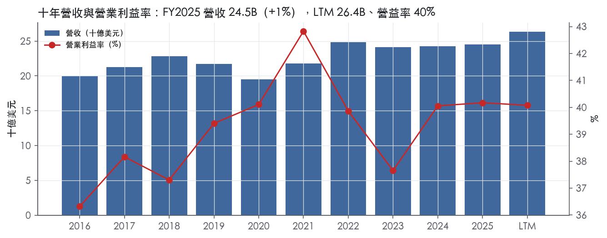
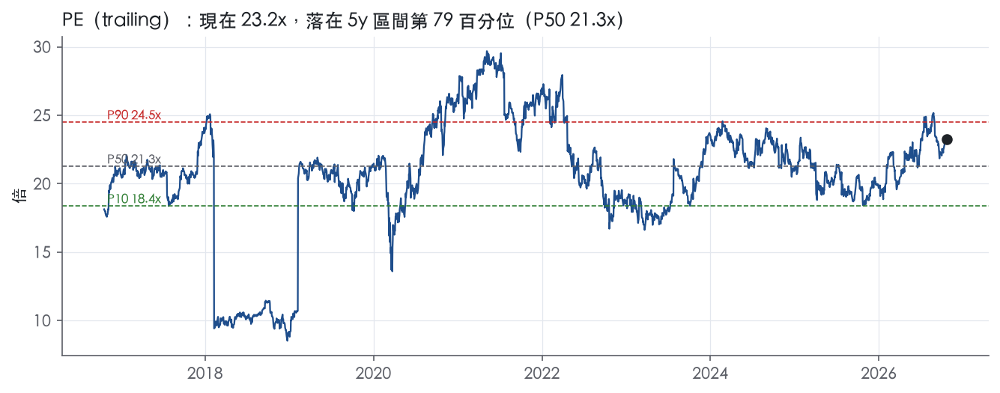
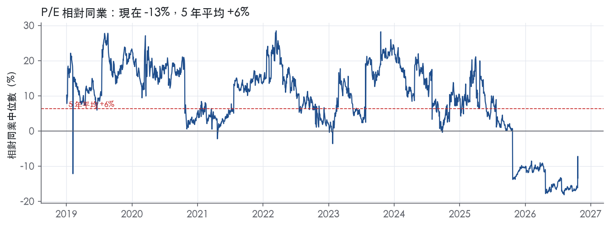
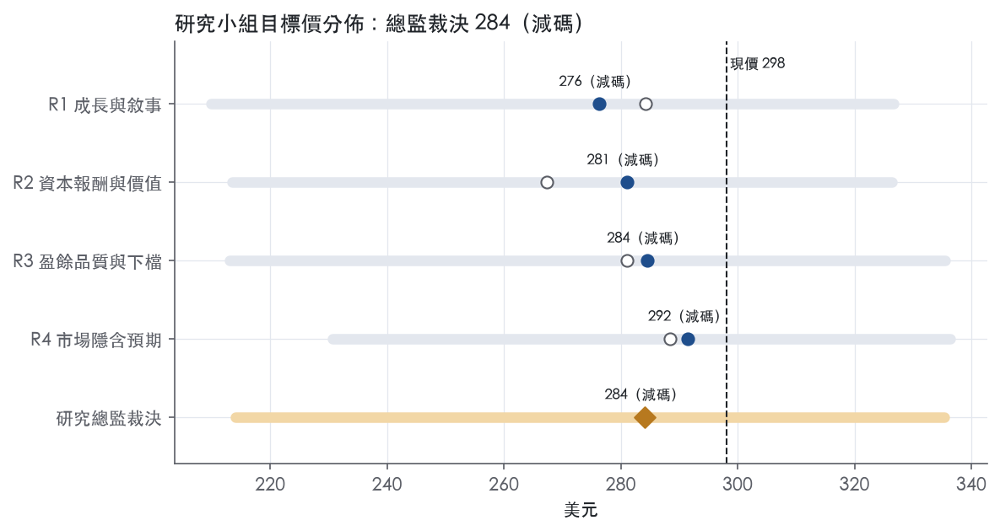
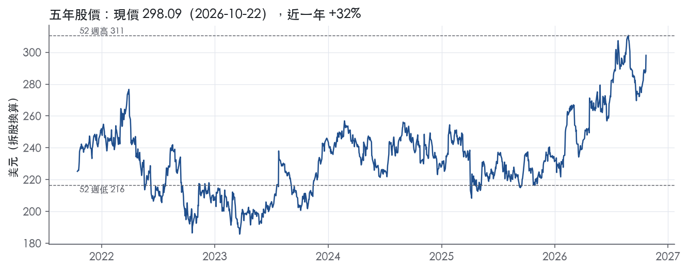

評等總表 › 工業 › UNP
成長靠燃油、倍數不擴張，相對同業看空｜評等 減碼｜目標價 284
| 報告日 | 評等 | 目標價 | 當時股價 | 超額報酬 |
|---|---|---|---|---|
| 2026-10-22 | 減碼 | 284 | 298 | -12.3% |
| 2026-09-28 | 減碼 | 273 | 274 | -7.6% |
| 快評 | 動作 | 結論 |
|---|---|---|
| 2026-10-22 | 維持 | Q3 全線高於預測，維持減碼 |
| 評等 | 減碼（邊界，鄰近賣出） |
| 12 個月目標價 | 284 美元 |
| 現價 | 298.09 美元（2026-10-22） |
| 預期報酬 | 股價 -4.7%＋股息 1.9%＝總報酬 -2.8%；同業籃門檻 9.5%，超額 -12.3% |
| 估值方法 | P/E 21.3x，套在第 5–8 季的EPS（也就是一年後的未來四季） |
| 三情境 | 熊 214／基準 291／牛 335 |
| 研究流程 | 四位研究員兩輪辯論＋研究總監裁決 |
| 資料來源 | SEC EDGAR XBRL、Tiingo、FRED（全免費） |
成長靠燃油、倍數不擴張，相對同業看空（研究總監裁決，四位研究員兩輪辯論後）
評等 減碼（邊界，鄰近賣出）｜12 個月目標價 284 美元（總監三情境機率加權 285 與研究員中位數 283 各半）｜現價 298.09（2026-10-22）
預期報酬：股價 -4.7%＋股息 1.9%＝總報酬 -2.8%。同業籃門檻 9.5%，超額 -12.3%，離賣出的分界不到三個百分點，屬邊界評等（落在其他級距的機率約三成）。
估值方法：P/E 21.3x，套在第 5–8 季的EPS（也就是一年後的未來四季）。三情境：熊 214（24%）／基準 291（47%）／牛 335（29%）。
什麼會讓研究總監改變看法：STB在2027-06-30前受理重提申請且未附互惠調車條件，基準倍數上移至22.8x以上並轉中性或看多；FY2026Q4營收年增<7%則燃油時序論點錯、NTM回到研究員的4.5–5.5%，若同時不含燃油貨運營收年增<3%，熊機率上修到30%。
| 過去四季（實際，FY2026Q3） | 未來四季 | 第 5–8 季 | 第 9–12 季 | |
|---|---|---|---|---|
| 營收（B） | 26.4B | 28.2B | 28.8B | 30.0B |
| 營收成長 | 7.4% | 6.9% | 2.0% | 4.5% |
| 營業利益率 | 40.1% | 40.4% | 41.0% | 41.0% |
| EPS（美元） | 12.82 | 13.17 | 13.66 | 14.32 |
| EPS 成長 | 9.1% | 2.7% | 3.7% | 4.8% |
| 每股股息（美元） | 5.56 | 5.56 | 5.56 | 5.56 |
| P/E（現價） | 23.2x | 22.6x | 21.8x | 20.8x |
| 股息殖利率（現價） | 1.9% | 1.9% | 1.9% | 1.9% |
過去四季為申報數字；預測為研究總監的假設、程式計算。倍數與殖利率都用現價計算，用來看現價對應各期獲利的高低。
| 項目 | 上次（2026-09-29） | 這次（2026-10-23） | 變動 |
|---|---|---|---|
| 評等 | 減碼 | 減碼 | ＝ |
| 機率加權目標價（美元） | 273 | 284 | +4.0% |
| 超額報酬 | -7.6% | -12.3% | -4.7 pp |
| 目標倍數 | 21.5x | 21.3x | — |
| 未來四季營收成長 | 5.0% | 6.9% | +1.9 pp |
| 未來四季營益率 | 40.0% | 40.4% | +0.4 pp |
| 未來四季 EPS（美元） | 12.26 | 13.17 | +7.5% |
| 熊／基準／牛機率 | 23／47／30 | 24／47／29 | — |
程式計算；「未來四季」各自從當次報告的資料起點算。研究總監逐點說明見第八章「與上次報告比較」。
| 情境 | 機率（歷史） | 故事 | 未來四季營收成長 | 第 5–8 季營益率 | 倍數 | 目標價 | 股價漲跌 |
|---|---|---|---|---|---|---|---|
| 熊 | 24%（22%） | 對應風險表第3條貨量循環（本行下行路徑GDP −0.5，類FY2023營收−3.0%、營益率37.7%）疊加第1條STB程序：重提申請再被認定不完整或拖向2028-01-28，選擇權歸零、終止費與稀釋仍在，倍數退到帶P10 | 3.5% | 39.0% | 18.2x | 214 | -28.2% |
| 基準 | 47%（51%） | 燃油附加費在2026Q4–2027Q1仍是順風、2027Q3起轉年減並集中在Q5–Q8；核心量+2價+3，油價76下營益率回到41.0%；併購懸置，倍數停在帶P75 | 6.9% | 41.0% | 21.3x | 291 | -2.4% |
| 牛 | 29%（27%） | 量能維持中個位數、不含燃油貨運營收≥6%、核心OR改善兌現，2027-06-30前STB受理重提申請並公布時程，相對同業折價部分收斂 | 8.5% | 41.8% | 23.0x | 335 | 12.5% |
目標價由程式依研究總監的驅動與倍數計算；機率由研究總監給定。括號內是歷史頻率：把這檔股票過去十年 12 個月報酬的波動形狀，置中在基準情境，結果落在各情境附近的比例。

四位研究員用不同方法各自估值，回應研究總監的質疑後交出第二輪，最後由總監逐點裁決。各研究員的主張見第七章，裁決理由見第八章，完整論證見《研究底稿》。
| 立場（一輪→二輪） | 加權目標價（一輪→二輪） | 評等（一輪→二輪） | 第二輪倍數 | 熊～牛目標價 | |
|---|---|---|---|---|---|
| R1 成長與敘事 | 中性→看空 | 284→276 | 減碼→減碼 | 20.3x | 210～327 |
| R2 資本報酬與價值 | 看空→看空 | 267→281 | 賣出→減碼 | 21.3x | 214～326 |
| R3 盈餘品質與下檔 | 中性→看空 | 281→284 | 減碼→減碼 | 21.3x | 213～335 |
| R4 市場隱含預期 | 看空→看空 | 288→292 | 減碼→減碼 | 21.5x | 231～336 |
| 研究總監裁決 | 看空 | 284 | 減碼 | 21.3x | 214～335 |
目標價由程式依各自的驅動與倍數計算；評等＝機率加權總報酬 − 同業籃門檻。
Union Pacific 是一家在美國西部三分之二國土經營的 Class I 貨運鐵路公司，連結太平洋岸、灣岸港口與中西部、東部門戶，是美國最具規模的鐵路貨運網路之一。公司只有一個可報告的經營部門——「The Railroad, along with its subsidiaries and rail affiliates, is our one reportable operating segment」¹，因為鐵路網路本身是高度整合的系統，財務上不拆分部門，但公司會依商品群組揭露營收¹。客戶是橫跨農業、工業、能源、汽車與消費品供應鏈的託運人，而不是終端消費者。公司營運 32,889 英里的路線，連結太平洋岸與灣岸港口與中西部、東部門戶，並提供通往墨西哥與加拿大主要門戶的多條走廊，是唯一服務所有六個主要墨西哥門戶的鐵路公司¹。
雖然法定上只有一個報告分部，公司按三大商品群組管理營收結構，呈現清楚的分部感。2025 年貨運營收合計 23.2B 美元，分別為 Bulk（散裝）占 33%、Industrial（工業）占 37%、Premium（高端/聯運）占 30%¹。Bulk 包含糧穀及其製品、肥料、食品冷鏈與煤炭及再生能源，其中懷俄明州 Powder River Basin 的煤炭是公司煤炭業務最大的部分¹。Industrial 涵蓋建築材料、工業化學品、塑膠、林產品、金屬礦石、石油與液化石油氣、碳酸鈉與砂，由基礎建設投資及化工、汽車、住宅等終端市場驅動¹。Premium 包含整車、汽車零件與國內外聯運貨櫃，公司是密西西比河以西最大的汽車運輸商，營運或可觸及超過 40 個車輛配送中心，並連接六座車輛組裝廠與西岸港口、六大墨西哥門戶及休士頓港¹。三大分部的成長方向：FY2026 以來聯運及工業鏈受關稅與庫存週期影響波動較大，但整體量能持續回升（見下節）。10-K 未揭露各分部的毛利率或資本回報細節，僅以貨運營收占比呈現規模。
客戶結構以直接服務的大型託運人與聯運中間商為主，通路包括直接鐵路運輸與聯運代理商（intermodal marketing companies，主要是shipper agents與物流公司）以及整車卡車業者¹。地理覆蓋西部 23 州，並透過灣岸、太平洋岸及東岸港口銜接國際進出口貨流，跨境則銜接加拿大鐵路系統與墨西哥六大門戶¹。國際聯運業務主要經由西岸港口的 20 或 40 英尺貨櫃進出口，目的地為公司眾多內陸聯運場站；國內聯運業務則是在北美境內提貨與配送的貨櫃及拖車運輸¹。公司近期在堪薩斯市、Inland Empire 與 Lathrop 投資聯運場站，以及德州灣岸綜合貨運場站與太平洋西北、西南主線，用以強化服務能力並擴大地理覆蓋¹。公司正推進與 Norfolk Southern 的合併案，目標打造「美國第一條洲際鐵路」，若通過將把地理覆蓋從西部延伸至東部，徹底改變通路結構²。
過去四個報告季，公司營收與獲利能力呈現先平穩後加速的走勢，merger 題材逐步成為主軸。FY2025Q4 營收 6.08B 美元，年減 0.6%，營益率 39.5%（dv.op_margin 相關數據）。FY2026Q1 營收 6.22B 美元、年增 3.2%，EPS 2.87。FY2026Q2（2026年7月23日公告）營業收入 6.9 億美元規模躍升，由燃油附加費上升、量能成長、核心定價與其他營收增加帶動，較去年同期成長 12%³；不含燃油附加費的貨運營收成長 4%³；報告營業比率 59.7%，調整後營業比率 59.2%，分別上升 70與110個基點，高油價不利影響營業比率 120 個基點³；稀釋EPS 3.36美元，調整後稀釋EPS 3.41美元³。FY2026Q3（2026年10月22日公告）營業收入 7.2 億美元，較去年同期成長15%，由更高燃油附加費、6%的量能成長、核心定價增益及其他營收增加帶動，部分被業務結構變化抵銷²；不含燃油附加費的貨運營收增加6%²；報告營業比率改善10個基點至59.1%，調整後營業比率上升30個基點至58.8%，高油價不利影響營業比率140個基點²；稀釋EPS 3.49美元，增加16%，調整後稀釋EPS 3.53美元，增加15%²。公司在2026年10月22日新聞稿中更新全年展望：維持2026年每股盈餘高個位數成長的指引，與到2027年三年CAGR高個位數至低兩位數目標一致；重申定價金額超過通膨金額、產業領先的營業比率與投入資本回報率、持續強勁的現金生成與穩定的股息成長；資本計畫維持35億美元²。四季合計看，營收與每股盈餘動能逐季加速，主要受貨運量能回升與燃油附加費推升所驅動，而非核心定價結構性改善。
公司自己定義的策略邏輯是「Safety, Service, and Operational Excellence leads to Growth」，即安全與服務品質的提升會驅動營運效率，進而帶來成長¹。公司表示，成功執行此策略的預期結果將是產業領先的營業比率與投入資本回報率¹。管理層在股東信中指出，2025年每股盈餘較2024年成長8%，總運量成長1%，主要受煤炭、工業化學品及塑膠、糧穀及其製品、以及岩石貨運帶動，部分被汽車及能源與特殊市場貨運的疲軟需求抵銷¹。公司並投入35億美元資本支出，用於強化基礎設施、現代化老舊機車、擴大業務、改善服務並嵌入新技術¹。公司將與Norfolk Southern的合併視為「歷史性機會」，打造美國第一條洲際鐵路，目前聚焦於取得監管核准並維持強健財務狀況以支持未來多年成長¹；在最新一季新聞稿中，CEO Jim Vena 表示期待STB合併審查流程的後續進展，並為客戶交付美國第一條洲際鐵路的效益²。整體來看，UNP的成長引擎短期靠量能回升與定價紀律驅動營業比率改善，中長期則高度綁定NS併購案的監管進度與整合執行力，這是股價評價的最大變數。目前trailing本益比23.2倍位於五年79百分位，顯示市場已部分反映併購樂觀情緒與營運動能轉強。若STB審查延宕或附加不利條件，將是最直接的下行風險。

Union Pacific 有寬護城河，我們有把握它未來 10 年以上的 ROIC 仍高於資本成本，趨勢判為穩定。這條護城河靠三樣東西支撐：西部路網形成的效率規模、鐵路相對卡車的結構性成本優勢，以及聯邦監管對路線新建和控制權移轉的審批門檻。數字面支持這個評級：十年 ROIC 每年都高於資本成本，營益率波動很小。主要侵蝕風險來自 STB 規則變動，而不是同業或新進者的直接競爭。
效率規模（主要來源）：西部長途貨運市場只容得下極少數路網，再多一條平行幹線的回報會低於資本成本，所以既有業者的地位在經濟上鎖死。公司揭露「We have 32,889 route miles, connecting Pacific Coast and Gulf Coast ports with the Midwest and Eastern U.S. gateways」¹。公司「is the only railroad serving all six major Mexico gateways」¹。公司「operates from all major West Coast and Gulf Coast ports to Eastern gateways」¹。公司也是「the largest automotive carrier west of the Mississippi River」，營運或可觸及超過 40 個車輛配送中心¹。這些港口、門戶、配送中心的實體接點，取得路權以後就無法複製，這是效率規模最硬的證據。
成本優勢：對最大的替代品（卡車），鐵路在長距離大宗貨運的單位成本有結構性領先。公司引述 AAR 的說法：「freight railroads are, on average, three to four times more fuel efficient than trucks」¹。這個差距來自物理特性（鋼輪鋼軌、長列車），卡車業者靠管理改善追不上。
無形資產（監管授權與路權）：新進者要進入市場，必須先過聯邦審批，這等於一張發不出去的執照。STB 的管轄範圍包括「transfer, extension, or abandonment of rail lines; and acquisition of control of rail common carriers」¹。路線延伸和控制權移轉都要審批，加上歷史路權本身難以重新取得，構成無形的進入障礙。
轉換成本與網路效應沒有列入：Item 1 沒有提供客戶專屬設施或合約綁定的具體證據，鐵路網也不符合「用戶越多、單一用戶價值越高」的網路效應定義。
看得到，量化底稿和寬護城河的主張大致吻合。ROIC 十年平均 16.6%，資本成本代理值 10.1%，平均超額 6.4%。有資料的 9 年裡，9 年都高於資本成本，最低一年也有 14.2%。營益率十年平均 39.2%，標準差只有 1.8%，最低 36.3%、最高 42.8%。營收成長最低到 -10.0% 的年份，營益率當年反而是 40.1%（FY2020 年度表）。需求衰退期利潤率沒有崩，說明公司有定價權和成本調節能力。
有三處數字和主張衝突或不完整，照實列出：
另外，資本成本代理值用的是偏高的 10 年債 5.13，即使在這個保守門檻下，最低 ROIC 仍高出 4 個百分點以上，安全邊際足夠支撐 10 年期判斷。ROE 標準差 8.6%主要反映財務槓桿變化，不作為護城河證據。
最大的威脅是監管，其次才是市場面。
目標倍數應該對一般運輸與工業同業給予溢價，對其他 Class I 鐵路則大致持平。理由是 ROIC 十年都高於資本成本、營益率標準差只有 1.8%，護城河耐久度足以支撐長期的倍數溢價，但這是鐵路產業共同的結構，不是 UNP 獨有。現在 P/E 23.2x，位於 5 年分位 79.0%，已經反映部分溢價，若 STB 互惠轉軌規則落地，溢價應該收斂。
| 指標 | 最新 | 十年平均 | 標準差 | 最低 | 最高 |
|---|---|---|---|---|---|
| ROIC | 16.0% | 16.6% | 2.1% | 14.2% | 21.9% |
| 營業利益率 | 40.2% | 39.2% | 1.8% | 36.3% | 42.8% |
| FCF 利潤率 | 22.4% | 23.2% | 3.1% | 18.8% | 28.7% |
| ROE | 40.4% | 40.1% | 8.6% | 26.4% | 53.2% |
程式計算。資本成本代理值（10 年債＋5%）：10.1%；ROIC 平均減資本成本：6.4%；ROIC 有資料的 9 年中，高於資本成本 9 年。
UNP 的 CFO／淨利 LTM 1.38x、近三年平均 1.33x、十年平均 1.37x，全部穩定在綠燈區。應計比率 LTM -4.0%、近三年 -3.3%、十年 -2.9%，全部是負值綠燈，代表盈餘沒有靠應計項目灌水，反而現金流持續領先淨利。SBC／營收僅 0.5%（LTM），對盈餘品質幾乎無侵蝕。唯一的黃燈群集中在槓桿（淨負債／EBITDA 2.15x）、FCF／淨利（0.88x）、稀釋股數變動與股東回饋比率，但都可用併購案與資本支出週期解釋，詳見下文。
現金持續跟上、甚至超過盈餘，這是 UNP 盈餘品質的核心支撐。CFO／淨利 LTM 1.38x，十年平均 1.37x，十年來沒有一年現金轉換低於淨利。公司自己揭露的「cash flow conversion rate」（CFO 減資本支出 / 淨利）2025 年為 77%，2024 年 87%，2023 年 75%⁴，這個口徑扣了全部資本支出，比我們計分表的 FCF／淨利（LTM 0.88x）更嚴格，但方向一致：扣完資本支出後現金轉換率波動但沒有系統性惡化。2025 年 CFO 9,290M，較 2024 年 9,346M 微降，公司解釋是「timing of payments to taxing authorities and purchased tax credits」造成，屬時間性因素而非盈餘品質惡化⁴。H.R.1 法案恢復 100% bonus depreciation，對 2025 年 CFO 帶來 0.3B 美元的正面影響⁴，這是稅法紅利不是營運改善，估值時應剔除視為一次性。應收帳款成長減營收成長為 -2.9pp（FY2025），綠燈，顯示營運資金沒有在吃盈餘。
公司揭露多個非 GAAP 指標，但差距都不大，顯示盈餘調整幅度小。3Q26 新聞稿：GAAP 稀釋 EPS 3.49 美元，調整後 EPS 3.53 美元，調整幅度僅約 1%²；GAAP 營益率 59.1%，調整後營益率 58.8%，調整後反而「惡化」30 個基點，公司說明是因為燃油價格上漲拖累報表營益率 140 個基點而調整項目把這個影響剝除²，這代表調整方向是正常化燃油波動，不是美化一次性費用。10-K 層級的非 GAAP 指標主要是 FCF（CFO 減投資活動現金流減股息）2025 年為 2,292M，較 2024 年 2,808M 下滑，公司自行定義含股息在內的保守口徑⁴；以及 Adjusted debt / Adjusted EBITDA 2025 年 2.7x，與 GAAP 口徑的 Debt / Net income 4.5x 並列揭露，調整項目主要是把運營租賃負債計入債務、EBITDA 剔除其他收益淨額⁴。我認為這些調整是合理的信評口徑對齊，不是盈餘灌水工具。SBC 占營收僅 0.5%～0.6%，本系統不加回，對淨利影響本就極小，沒有隱藏的加回空間。
槓桿穩定在中性區間，利息保障充足，但併購案已改變資本配置節奏。淨負債／EBITDA LTM 2.15x，近三年平均 2.58x，屬黃燈但遠低於紅線 3.00x；公司自揭 Adjusted debt / Adjusted EBITDA 2025 年 2.7x、2024 年 2.7x、2023 年 3.0x，顯示趨勢是在降槓桿而非加槓桿⁴。利息保障倍數 LTM 8.32x，綠燈，有效利率僅 4.1%（2025）⁴，付息能力無虞。2025 年資本配置：CFO 9.3B，償還長期債務 1.4B，支付股息 3.2B，回購股份 2.7B⁴，但因宣布收購 Norfolk Southern，公司已暫停股票回購計畫⁴，這直接解釋了（股利＋回購）／淨利近三年平均 71.2%、十年平均高達 111.4%的黃燈——過去是強力回購推升比率，未來因併購暫停回購，比率會自然下降，不是財務吃緊的訊號。合約義務表顯示債務到期分散，2026 年僅 2.7B 到期，長尾集中在 2030 年後的 47.7B⁴，到期結構健康。
淨利率 FY2016→FY2017 跳動 +29pp：這是一次性會計／稅法事件，非營運改善。2017 年適逢美國 2017 Tax Cuts and Jobs Act（TCJA）通過，遞延稅負重新計量產生大幅一次性稅務利得，是鐵路業與多數美國企業 2017 年財報的共同現象。10-K 原文未在本節逐條列出 2016-2017 比較（本次 MD&A 只討論 2025 vs 2024），但從淨利同期從 5.97B（2018）、跳升至 10.71B（2017）再回落的模式（量化底稿年度表）與公開已知的 TCJA 時點高度吻合，應視為稅法一次性項目，估值不應外推這個成長率。
淨利率 FY2017→FY2018 跳動 -24pp：同一事件的鏡像，2017 年稅改一次性利得墊高基期，2018 年回到正常稅率後淨利相應回落，非營運衰退。2018 年淨利 5.97B 較正常化後的 2016 年 4.23B、2019 年 5.92B 相比其實是合理區間（量化底稿年度表），佐證 2017 年才是異常年，2018 年是回歸常態。
FCF／淨利 LTM 0.88x、近三年 0.80x，黃燈：主要是資本支出偏高的鐵路業特性，非盈餘品質問題。2025 年總資本投資 3,791M，較 2024 年 3,452M 增加，公司解釋資本計畫將持續投資於安全、韌性與機車車隊現代化⁴，2026 年資本計畫已上調至 3.5B（原 3.3B 展望上修）²。這是成長與維護性資本支出，不是盈餘品質瑕疵。
淨負債／EBITDA LTM 2.15x，近三年 2.58x，黃燈：如上節說明，公司自揭 Adjusted debt/EBITDA 2.7x 且趨勢向下，加上併購案完成前公司已暫停回購保留現金彈性，槓桿是可控且主動管理的狀態，不是失控的紅旗。
稀釋股數年變動 LTM +0.1%，黃燈：這是因為暫停回購後股數不再淨減少，近三年平均仍是 -1.5%、十年平均 -3.7%，顯示長期是股東友善的縮股趨勢，LTM 轉正是併購暫停回購的短期效果，不是稀釋式增發。
（股利＋回購）／淨利近三年 71.2%、十年 111.4%，黃燈：已在資本配置節說明，為歷史高回購強度所致，公司已主動暫停回購為併購保留資本，這是審慎而非過度舉債回饋的訊號。
GAAP 盈餘可直接採用，不需要大幅打折：現金轉換率穩定 ≥1.3x、應計比率常年為負、SBC 占比不到 1%，顯示帳上淨利有紮實現金支撐。唯一需要留意的是 2025 年 CFO 有 0.3B 來自 H.R.1 稅法紅利的一次性挹注，估值模型的 FCF 基數應剔除這塊非常態現金流。槓桿（淨負債/EBITDA 2.15x、Adjusted debt/EBITDA 2.7x）仍在投資級區間，不構成壓抑估值倍數的理由，但 Norfolk Southern 併購完成後的資本結構變化（新增股本稀釋、債務承擔）需要在併購確定後重新評估槓桿對目標倍數的限制。
| 項目 | LTM | 近三年 | 十年 | 燈號 | 規則 |
|---|---|---|---|---|---|
| 營業現金流／淨利 | 1.38x | 1.33x | 1.37x | 綠 | ≥1.00x 綠、<0.80x 紅 |
| 自由現金流／淨利 | 0.88x | 0.80x | 0.83x | 黃 | ≥0.90x 綠、<0.60x 紅 |
| 應計比率（(淨利−CFO)／平均總資產） | -4.0% | -3.3% | -2.9% | 綠 | ≤0.0% 綠、>5.0% 紅 |
| SBC／營收 | 0.5% | 0.5% | 0.4% | 綠 | ≤3.0% 綠、>8.0% 紅 |
| 淨負債／EBITDA | 2.15x | 2.58x | 2.27x | 黃 | ≤1.50x 綠、>3.00x 紅 |
| 利息保障倍數（營業利益／利息） | 8.32x | 7.32x | 8.43x | 綠 | ≥8.00x 綠、<3.00x 紅 |
| 稀釋股數年變動 | 0.1% | -1.5% | -3.7% | 黃 | ≤0.0% 綠、>3.0% 紅 |
| （股利＋回購）／淨利 | 43.7% | 71.2% | 111.4% | 黃 | ≥50.0% 綠、<0.0% 紅 |
| 應收帳款成長 − 營收成長（FY2025） | -2.9pp | — | — | 綠 | ≤5pp 綠、>15pp 紅 |
程式計算；燈號以 LTM（無則近三年平均）判定。
| 風險 | 觸發指標（看什麼數字、在哪裡看） | 對 EPS 的影響方向與粗略幅度 | 未來 12 個月發生機率（高／中／低） | 出處 |
|---|---|---|---|---|
| NS 合併案監管不確定性（STB 審查、終止日 2028-01-28） | STB 後續申請完整性裁定、公開聽證時程、終止期限倒數⁵ | 方向：負向，大。破局需付 Norfolk Southern 25億美元終止費（⁵原文為「termination fee of $2.5 billion」） | 高 | 10-K 年報 FY2025 Item 1A（風險因素） |
| 燃油價格波動侵蝕營業比率 | 公司揭露的「高油價不利影響營業比率」基點數（本季 140bp）² | 方向：負向，中。本季調整後OR仍上升30個基點至58.8%² | 高 | 8-K 財報新聞稿（2026-10-22） |
| 貨量景氣循環波動（關稅、國際貿易） | 季度 revenue carloads 年增率、Freight revenue excluding fuel surcharge 年增率² | 方向：雙向，中。2025年關稅已「adversely affected demand」且「增加了採購商品與服務的成本」⁵ | 中 | 10-K 年報 FY2025 Item 1A（風險因素） |
| 勞工協議與罷工／停工風險 | 13個主要工會的集體協議談判進度（RLA五年一修）、是否出現 strike/work stoppage 公告¹ | 方向：負向，中。公司明言可能「material adverse effect on results of operations, financial condition, and liquidity」⁵ | 低 | 10-K 年報 FY2025 Item 1A（風險因素） |
| 資本市場依賴與信評下調風險 | 公司信用評等變動公告、是否失去投資等級（影響 Receivables Facility 使用資格）⁵ | 方向：負向，中。信評降至投資等級以下會限制應收帳款證券化融資工具使用⁵ | 低 | 10-K 年報 FY2025 Item 1A（風險因素） |
NS 合併案監管不確定性是目前最大的單一變數，因為公司自己把它列為獨立一類風險並用大篇幅說明⁵。10-K 明確寫出 2026 年 1 月 STB 已認定合併申請「incomplete」並駁回（不帶偏見），公司可重新提交但需重新啟動完整性審查⁵。合併協議終止日為 2028-01-28（可在特定情況下自動延長）⁵；若公司主動違約終止，須付 Norfolk Southern 25億美元終止費⁵。目前市場 trailing P/E 23.2x 已站在五年79百分位、EV/Sales 7.8x 站在84百分位，顯示股價已部分計入合併成功的樂觀情境，一旦審查延宕或附加「materially burdensome regulatory condition」以外的重大讓步要求，估值回落風險大於盈餘本身。
燃油價格波動是可每季直接觀測、且公司自己量化的風險。本季新聞稿明確揭露「higher fuel price unfavorably impacted operating ratio 140 basis points」²，顯示即便核心業務改善，油價仍可直接把報告OR往上拉。10-K 也說明公司透過燃油附加費回收成本但「trail such fluctuations in fuel prices by approximately two months」，造成季度間波動⁵。
貨量景氣循環與貿易政策風險主要來自公司對關稅的直接陳述：「During fiscal year 2025, new tariffs were imposed in the U.S. for imports from a broad range of countries and materials」且「Incremental import tariffs adversely affected demand for our services and increased our costs for purchased goods and services during fiscal year 2025 and may continue to do so in 2026」⁵。但本季數據顯示量能實際上在回升——revenue carloads 成長6%、不含燃油附加費的貨運營收成長6%²，顯示這條風險目前尚未兌現，但仍是可被監測的雙向變數。
勞工協議風險屬於結構性但非立即性的風險。公司揭露13個主要工會代表約83%員工，多數FY2025-2029地方談判已完成，僅一家子公司仍有兩項談判在進行中¹，顯示近期發生全面停工的機率偏低，但一旦發生，公司明確承認可能造成「material adverse effect」⁵。
資本市場依賴風險是財務結構性的尾部風險。公司明確說明若財務狀況顯著惡化導致信評降至投資等級以下，將失去使用應收帳款證券化融資工具（Receivables Facility）的資格⁵。目前淨負債 28.11B 美元、EV 205.25B 美元，槓桿尚屬可控，加上合併案若需舉債融資可能牽動評等機構觀感⁵，但目前尚無信評下調的具體訊號，判定機率為低。
1.10-K 風險章對 NS 合併案的「綜效無法實現」風險寫得很細，但沒有量化若合併破局後，UNP 單獨維持「industry-leading operating ratio and return on invested capital」目標的獨立基本面是否會不如預期——目前 trailing 倍數已反映合併溢價，若破局，重新評價的下檔空間需要單獨建模，而公司財報與10-K都沒有提供「無合併」情境下的獨立財測基準。
2.公司在最新新聞稿中重申「reported earnings per share growth of high-single digit」及「3-year CAGR target of high-single to low-double digit through 2027」²，但近兩季EPS年增率（FY2026Q2 年增、FY2026Q3 年增16%）明顯高於這個指引區間，顯示本季成長有相當部分來自燃油附加費與基期效應而非核心定價，一旦油價回落或基期墊高，季度年增率可能快速收斂到個位數甚至更低，這個「指引與實際成長率的落差」本身是一個該被持續監測、但公司沒有主動點名的風險。
現價 298.09 對應 trailing（過去四季）P/E 23.2x、EV/EBITDA 15.7x、EV/EBITA 19.4x、EV/Sales 7.8x、FCF 殖利率 3.8%。主要估值倍數 P/E 現在 23.2x，落在5 年區間第 79 百分位（P10／P50／P90 = 18.4x／21.3x／24.5x）。

把程式的機械基準預測放到現價下，市場付的前瞻倍數是：P/E（未來四季） 22.8x、P/E（第 5–8 季） 21.3x。反推 DCF 顯示市價隱含未來五年營收年成長 12.8%（WACC 9.0%、終值成長 3.0%、FCF 利潤率 26.1%，SBC 不加回）。
| 倍數 | 現在 | 5 年 P10 | 5 年 P50 | 5 年 P90 | 現在分位 | 全期 P50 |
|---|---|---|---|---|---|---|
| P/E | 23.2x | 18.4x | 21.3x | 24.5x | 79.0% | 21.0x |
| EV/EBITDA | 15.7x | 13.0x | 14.5x | 16.4x | 78.9% | 14.1x |
| EV/EBITA | 19.4x | 16.1x | 18.0x | 20.4x | 76.2% | 17.3x |
| EV/EBIT | 19.4x | 16.1x | 18.0x | 20.4x | 76.2% | 17.3x |
| EV/Sales | 7.8x | 6.4x | 7.2x | 8.4x | 84.1% | 6.8x |
| P/S | 6.7x | 5.1x | 5.9x | 7.2x | 86.0% | 5.6x |
| P/FCF | 26.5x | 21.7x | 25.0x | 30.3x | 64.5% | 24.7x |
trailing 倍數（股價 ÷ 過去四季）；分位以每個交易日計算。
同業籃：CSX, NSC, CP, CNI（手動名單（playbooks/peers.yaml））。評等門檻 9.5%：同業「倍數不變下持有一年」的隱含報酬中位數（＝ FCF 殖利率 ×(1＋g)＋g，g 為 5 年營收年複合成長並夾在 −2%～8%），每家夾在 0～15%、P/E 低於 5 倍視為資料可疑而排除，中位數再限制在 10 年債到 10 年債＋5% 之間；排除：CNI（隱含報酬算不出來）。
| 代號 | 市值 | 5 年營收 CAGR | 營益率 | ROIC | P/E | 5 年 P/E 中位數 | EV/EBITDA | P/FCF | 隱含報酬 |
|---|---|---|---|---|---|---|---|---|---|
| UNP | 177.1B | 4.6% | 40.1% | 16.0% | 23.2x | 21.3x | 15.7x | 26.5x | 8.6% |
| CSX | 95.2B | 5.9% | 36.4% | 11.3% | 26.8x | 19.0x | 15.9x | 29.6x | 9.5% |
| NSC | 76.0B | 4.5% | 31.5% | 11.2% | 28.4x | 22.0x | 16.5x | 46.1x | 6.7% |
| CP | 80.4B | 14.4% | 36.8% | 6.0% | 21.2x | 19.3x | 13.6x | 33.1x | 11.3% |
| CNI | — | — | — | — | — | — | — | — | — |
| 同業中位數 | 5.9% | 36.4% | 11.2% | 26.8x | 19.3x | 15.9x | 33.1x | 9.5% |
全部 trailing，程式以各公司 SEC XBRL 與 Tiingo 行情計算；第一列為本檔。
P/E 相對同業中位數：現在 -13.4%，過去 1 年平均 -13.5%、3 年 2.9%、5 年 6.4%；EV/EBITDA 相對同業中位數：現在 -1.7%，過去 1 年平均 -1.4%、3 年 3.8%、5 年 8.4%。

事後實現前瞻倍數帶（P/E，2018-11-19..2025-11-17）：P10／P50／P90 = 18.2x／20.3x／22.1x。它是每個交易日的股價除以之後四季實際實現的指標；一年後，今天的第 5–8 季正是那時的未來四季，所以這條帶是 12 個月目標價的同口徑倍數。因為用的是事後實際而非當時預期，過去成長超乎預期的公司這條帶會偏低。
程式的機械基準（成長率從過去四季年增率三年收斂到 6%、利潤率持平）用 事後實現前瞻 P/E P50 估值得到 284（-4.9%），市場現行前瞻倍數（現價 ÷ 基準 未來四季指標）一年後持平，套在基準 第 5–8 季指標得到 319。這兩個數字只是參考點，不是本報告的目標價；研究員對這個定價的回應在第七章。
下表是每位研究員第一輪（各自獨立）與第二輪（回應研究總監的質疑後）的結果。目標價全由程式依各自的假設計算。
| 立場（一輪→二輪） | 加權目標價（一輪→二輪） | 評等（一輪→二輪） | 第二輪倍數 | 熊～牛目標價 | |
|---|---|---|---|---|---|
| R1 成長與敘事 | 中性→看空 | 284→276 | 減碼→減碼 | 20.3x | 210～327 |
| R2 資本報酬與價值 | 看空→看空 | 267→281 | 賣出→減碼 | 21.3x | 214～326 |
| R3 盈餘品質與下檔 | 中性→看空 | 281→284 | 減碼→減碼 | 21.3x | 213～335 |
| R4 市場隱含預期 | 看空→看空 | 288→292 | 減碼→減碼 | 21.5x | 231～336 |
| 研究總監裁決 | 看空 | 284 | 減碼 | 21.3x | 214～335 |
目標價由程式依各自的驅動與倍數計算；評等＝機率加權總報酬 − 同業籃門檻。
分歧度：第一輪 加權目標價 267～288（區間＝現價的 7%）· 倍數 20.5～22.5x · 立場 中性×2、看空×2；第二輪 加權目標價 276～292（區間＝現價的 5%）· 倍數 20.3～21.5x · 立場 看空×4（方向一致）。

| 研究員 | 第二輪主張 | 堅持的理由 |
|---|---|---|
| R1 成長與敘事 | 看空；倍數20.3倍，核心成長只有4%到5%。 | 生產力已反映在營益率，併購不在預測裡，倍數不付溢價。 |
| R2 資本報酬與價值 | 看空；倍數21.3倍，護城河寬，但價格已付足。 | 併購一年內不會定案，市場仍會付錢，但不付到現行23.2倍。 |
| R3 盈餘品質與下檔 | 看空；倍數21.3倍，EPS真實，但營益率天花板低。 | 燃油只能部分回補，營益率只到40.8%，四人中最低。 |
| R4 市場隱含預期 | 看空；倍數21.5倍，市場付22.8倍買的是燃油墊高的成長。 | 熊情境只算景氣下行，倍數19.2倍，不加併購失敗。 |
每位研究員的逐條回應與完整論證見《研究底稿》（UNP_研究底稿_2026-10-23.docx）。
| 分歧點 | R1 | R2 | R3 | R4 | 什麼資料會分出勝負 |
|---|---|---|---|---|---|
| 基準倍數在前瞻帶的位置 | P50 20.3x：不付併購與生產力溢價 | P75 21.3x：終止日 2028-01-28，選擇權期內仍被定價 | P75 21.3x：類股重評、UNP 由溢價轉折價 | 21.5x：P75 稍上方，指引優於帶期間實現 | STB 對重提申請的完整性裁定；一年後 trailing P/E |
| 營收路徑形狀（y1／y2） | 4.5%／4.0% | 4.5%／4.0%：量 2、價 3、燃油 −1 | 5.5%／3.5% | 4.0%／4.5% | FY2026Q4 與 FY2027Q3 營收年增 |
| Q5–Q8 營益率 | 41.5% | 41.0% | 40.8%：燃油只回補 20bp | 41.5% | |
| 情境設計：牛倍數與熊機制 | 牛 22.1x（帶 P90）；熊 18.2x 總經＋程序失敗 | 牛 22.5x；熊 18.2x 含互惠轉軌 | 牛 23.0x 同業折價收斂；熊 18.0x 風險表第 3、1 條 | 牛 23.0x；熊 19.2x 只剩總經 | STB 受理後相對同業折價是否收斂；FY2027Q1 carloads |
1. 基準倍數：選 R2，21.3x。 10-K Item 1A 的終止日是 2028-01-28，12 個月內市場仍會為併購選擇權定價；R1 退回 P50 等於假設 trailing P/E 從 5 年帶第 79 百分位一年內回到中位數，他拿不出觸發事件。R3 的觀察成立：收購方折價 13.4%、被收購方 NSC 28.4x（同業比較表），這是併購定價結構，不是 UNP 被計入樂觀。R4 的 21.5x「稍上方」沒有量化的錨；R1 指出帶期間實現 EPS 有 FY2020、FY2023 兩個下行年，帶的「偏低」偏誤對 UNP 不明顯，我接受，所以不在 P75 之上。低於市場持平 22.8x 的理由是個股的：一年後可見的是附加費轉年減的區間（裁決 2）；收購方背著發股稀釋、2.5B 終止費與信評觸發贖回（8-K 2026-10-22 前瞻聲明、10-K Item 1A），這些不在驅動裡；22.8x 本身高於帶的 P90 22.1x。不含利率。
2. 營收形狀：own——y1 留在機械基準 6.9%，y2 降到 2.0%（假設）。 四人一致把 NTM 砍到 4.0–5.5%，理由都是附加費隨油價退潮。但 10-K Item 1A 寫附加費落後油價約兩個月；本行前提 2026Q4 WTI 仍是 97；對比基期 FY2025Q4（營收年減 0.6%）與 FY2026Q1（+3.2%）都在油價飆升之前。Q3 營收 +15.3%而不含燃油的貨運營收只 +6%（8-K 2026-10-22），這段差距在 2026Q4、2027Q1 的年比裡仍會重現，要到 2027Q3（76 對 97）才轉負——NTM 的燃油淨貢獻是正的，機械基準的 6.9% 反而接近。逆風集中在 Q5–Q8：四季全部對上高油價基期，用 R2 的核心拆解（量 +2、價 +3）扣掉燃油後只剩 2.0%，比四人都低。R2 的燃油 −1% 低估這段逆風；R3 的終點與我相近但形狀不夠陡；R4 的 y2 高於 y1 方向錯。y3 取 4.5%（R1／R3／R4：燃油歸零，量加價）。
3. Q5–Q8 營益率：選 R2，41.0%。 140bp 是對 2025Q3 油價的年增影響（8-K 2026-10-22），WTI 回到 76 仍高於 2025 水準，回補只是部分；Q3 調整後 OR 仍年增 30bp 至 58.8%（同上），核心改善沒有大到吃掉全部燃油；十年只有 FY2021 的 42.8%站上 41% 以上。R1／R4 的 41.5% 需要燃油接近全額回補；R3 只給 20bp 回補、把 140bp 當永久成本，太低。預測紀錄也指向這裡：R1 營業利益誤差中位數 +1.8%（偏高），R2 −2.7%（偏低），真值落在兩者之間、靠 R2 的一側。y1 取 R2 的 40.4%，2026Q4 高油價仍在。
4. 情境設計：選 R3。 牛的觸發是 STB 受理重提申請並公布時程，這會讓收購方折價的結構開始解開，P/E 相對同業由折價 13.4% 向 5 年平均溢價 6.4% 收斂，23.0x 只略高於市場持平 22.8x；不追同業中位數 26.8x（R1 說得對，它被收購對價扭曲）。R1 的牛停在帶 P90 22.1x，等於有觸發事件卻沒有重評。熊必須對應風險表：R4 沒拿到風險表，他的熊只剩總經、倍數 19.2x，少算了下行中收購方的負擔；R2 的互惠轉軌是規則制定中的多年期侵蝕項（護城河章），12 個月內不是觸發；R3 的風險表第 3 條（貨量循環）加第 1 條（STB 程序）正確，倍數由 18.0x 改成帶 P10 18.2x，錨在帶上不另外打折。
漂移與總經偏離。 R2（靠攏 81%）與 R3（93%）的每一項修正都對得上第一輪意見與轉發的 10-K Item 1A／同業表，屬新證據；R3 未被要求卻把牛倍數由 22.0x 提到 23.0x，理由（同業折價收斂）成立且我採用。drift_rejections 為空。四人 macro_deviations 皆空；我的燃油時序是本行 WTI 路徑加 10-K 滯後條款的推論，不是偏離，macro_deviations 為 []。
市場現在付 22.8x 在機械基準的 NTM EPS 13.06 上；我們的 NTM 營益率 40.4% 不低於基準，差距不在未來四季盈餘，而在 Q5–Q8 營收（2.0% 對機械 6.5%，附加費轉年減）與倍數（21.3x 對 22.8x，併購懸置、帳面成長降檔）。立場看空與評等減碼一致：基準情境目標價幾乎等於現價 298，含股息總報酬約零，遠低於同業門檻 9.5%（CSX 9.5%、CP 11.3%）；這是相對同業的減碼，絕對下檔有限，不是賣出。
現價 298.09 → 點估目標價 291 → 機率加權目標價 285 → 目標價 284，差距拆成五段：成長順延 +21 美元（市場現行倍數 22.8x 一年後持平、獲利照機械基準）；倍數差 -21 美元（總監倍數 21.3x vs 市場持平倍數 22.8x，同一機械基準預測）；盈餘差 -7 美元（總監預測的第 5–8 季EPS 0.0B vs 機械基準 0.0B，同一倍數）；情境不對稱 -6 美元（機率加權減點估）；研究小組平均 -1 美元（總監機率加權 285 與研究員第二輪中位數 283 各半）。各段相加等於目標價減現價。本階段未接賣方共識，差距以市場隱含預期為對照。
| 驅動 | 機械基準 | 研究總監 | 差異 |
|---|---|---|---|
| 未來四季營收成長 | 6.9% | 6.9% | ＝ |
| 第 5–8 季營收成長 | 6.5% | 2.0% | -4.5 pp |
| 第 9–12 季營收成長 | 6.0% | 4.5% | -1.5 pp |
| 未來四季營益率 | 40.1% | 40.4% | +0.3 pp |
| 第 5–8 季營益率 | 40.1% | 41.0% | +0.9 pp |
| 第 9–12 季營益率 | 40.1% | 41.0% | +0.9 pp |
| D&A／營收 | 9.6% | 9.6% | ＝ |
| 資本支出／營收 | 14.5% | 14.5% | ＝ |
| SBC／營收 | 0.5% | 0.5% | ＝ |
| 稅率 | 22.5% | 22.5% | ＝ |
| 股數年變動 | 0.2% | 0.2% | ＝ |
研究總監只寫偏移，未寫的沿用基準。
| 期 | 營收 | 成長 | 營益率 | 營業利益 | EBITDA | EBITA | 淨利 | EPS | FCF | 期末淨負債 |
|---|---|---|---|---|---|---|---|---|---|---|
| 未來四季 | 28.2B | 6.9% | 40.4% | 11.4B | 14.1B | 11.4B | 7.8B | 13.17 | 6.6B | 24.8B |
| 第 5–8 季 | 28.8B | 2.0% | 41.0% | 11.8B | 14.6B | 11.8B | 8.2B | 13.66 | 6.9B | 21.3B |
| 第 9–12 季 | 30.0B | 4.5% | 41.0% | 12.3B | 15.2B | 12.3B | 8.6B | 14.32 | 7.2B | 17.4B |
程式依上表的驅動計算；季度用最近四季季節性分攤；不含營運資金變動。
估值方法：P/E 21.3x，套在第 5–8 季的EPS（也就是一年後的未來四季）。研究總監目標倍數的錨：事後實現前瞻P/E帶P75 21.3x；併購終止日2028-01-28使選擇權期內仍被定價故不退P50；附加費轉年減與收購方稀釋、終止費、信評負擔使其低於市場持平22.8x，不含利率；相對同業折價13.4%在基準不收斂。
計算：EPS（第 5–8 季） 13.66 × 21.3x → 點估目標價 291（-2.4%）；隱含 P/E（未來四季）22.1x、P/E（第 5–8 季）21.3x、EV/EBITDA（第 5–8 季）13.6x、FCF 殖利率（第 5–8 季）4.0%。
總監三情境機率加權目標價 285，研究員第二輪中位數 283，兩者各半＝目標價 284；預期報酬 股價 -4.7%＋股息 1.9%＝總報酬 -2.8%；減評等門檻 9.5%（同業籃隱含報酬中位數（CSX, NSC, CP, CNI））＝超額報酬 -12.3% → 評等 減碼（超額 >+15% 買進、+5～+15% 加碼、±5% 中立、−5～−15% 減碼、<−15% 賣出）。同一份資料重開研究小組，超額約有正負四個百分點的雜訊（一個標準差，二十檔實測）；以此估計，評等落在其他級距的機率約三成。超額離賣出的分界不到三個百分點，應視為邊界評等。
| 情境 | 機率 | 未來四季成長 | 第 5–8 季成長 | 第 5–8 季營益率 | EPS（第 5–8 季） | 倍數 | 目標價 |
|---|---|---|---|---|---|---|---|
| 熊 | 24% | 3.5% | -3.0% | 39.0% | 11.76 | 18.2x | 214 |
| 基準 | 47% | 6.9% | 2.0% | 41.0% | 13.66 | 21.3x | 291 |
| 牛 | 29% | 8.5% | 4.5% | 41.8% | 14.58 | 23.0x | 335 |
| 主張 | 驗證日 | 看哪個數字 | 門檻 |
|---|---|---|---|
| 燃油附加費滯後與低基期使FY2026Q4營收年增仍在雙位數 | 2027-01-31 | 年增率 | >= 10% |
| 附加費轉年減使FY2027Q3營收成長近零 | 2027-10-31 | 年增率 | <= 3% |
| 油價回到76後GAAP營益率部分回補 | 2027-10-31 | >= 41.0% | |
| 併購懸置下倍數不再擴張 | 2027-10-22 | trailing P/E（pe） | <= 22.5x |
到期由程式結算（第 5 階段帳本）。
內文上標數字對應下列公司申報文件；未標上標的分析與判斷，是研究小組的觀點。報告中的每個數字都經程式逐一核對資料包或原文。
| 期 | 營收 | 成長 | 毛利率 | 營益率 | EBITDA | 淨利 | EPS | CFO | FCF | ROIC | 淨負債 | 稀釋股數 |
|---|---|---|---|---|---|---|---|---|---|---|---|---|
| FY2016 | 19.9B | — | — | 36.3% | 9.3B | 4.2B | 5.07 | 7.5B | 4.0B | — | 13.7B | 0.8B |
| FY2017 | 21.2B | 6.5% | — | 38.2% | 10.2B | 10.7B | 13.36 | 7.2B | 4.0B | 21.9% | 15.7B | 0.8B |
| FY2018 | 22.8B | 7.5% | — | 37.3% | 10.7B | 6.0B | 7.91 | 8.7B | 5.2B | 16.0% | 21.3B | 0.8B |
| FY2019 | 21.7B | -4.9% | — | 39.4% | 10.8B | 5.9B | 8.38 | 8.6B | 5.2B | 15.5% | 24.6B | 0.7B |
| FY2020 | 19.5B | -10.0% | — | 40.1% | 10.0B | 5.3B | 7.88 | 8.5B | 5.6B | 14.2% | 25.0B | 0.7B |
| FY2021 | 21.8B | 11.6% | — | 42.8% | 11.5B | 6.5B | 9.95 | 9.0B | 6.1B | 16.8% | 29.2B | 0.7B |
| FY2022 | 24.9B | 14.1% | — | 39.9% | 12.2B | 7.0B | 11.21 | 9.4B | 5.7B | 17.4% | 32.6B | 0.6B |
| FY2023 | 24.1B | -3.0% | — | 37.7% | 11.4B | 6.4B | 10.45 | 8.4B | 4.8B | 15.5% | 31.5B | 0.6B |
| FY2024 | 24.2B | 0.5% | — | 40.1% | 12.1B | 6.7B | 11.09 | 9.3B | 5.9B | 16.0% | 30.2B | 0.6B |
| FY2025 | 24.5B | 1.1% | — | 40.2% | 12.3B | 7.1B | 11.98 | 9.3B | 5.5B | 16.0% | 30.5B | 0.6B |
SEC XBRL；每股數據已依拆股換算到現在股數基準。EBITDA 空白 = 該年無形攤銷在 companyfacts 中缺 tag。
| 期 | 期末 | 推導 | 營收 | 毛利率 | 營益率 | EBITDA | 淨利 | EPS | CFO | FCF | 現金 | 總債務 |
|---|---|---|---|---|---|---|---|---|---|---|---|---|
| FY2023Q4 | 2023-12-31 | Q4 | 6.2B | — | 39.1% | 3.0B | 1.7B | 2.71 | 2.4B | 1.4B | 1.1B | 32.6B |
| FY2024Q1 | 2024-03-31 | 6.0B | — | 39.3% | 3.0B | 1.6B | 2.69 | 2.1B | 1.3B | 0.9B | 32.2B | |
| FY2024Q2 | 2024-06-30 | 6.0B | — | 40.0% | 3.0B | 1.7B | 2.74 | 1.9B | 1.0B | 1.1B | 32.2B | |
| FY2024Q3 | 2024-09-30 | 6.1B | — | 39.7% | 3.0B | 1.7B | 2.75 | 2.7B | 1.8B | 0.9B | 31.6B | |
| FY2024Q4 | 2024-12-31 | Q4 | 6.1B | — | 41.3% | 3.1B | 1.8B | 2.90 | 2.7B | 1.7B | 1.0B | 31.2B |
| FY2025Q1 | 2025-03-31 | 6.0B | — | 39.3% | 3.0B | 1.6B | 2.70 | 2.2B | 1.3B | 1.4B | 32.8B | |
| FY2025Q2 | 2025-06-30 | 6.2B | — | 41.0% | 3.1B | 1.9B | 3.15 | 2.3B | 1.4B | 1.1B | 32.8B | |
| FY2025Q3 | 2025-09-30 | 6.2B | — | 40.8% | 3.2B | 1.8B | 3.01 | 2.5B | 1.6B | 0.8B | 31.8B | |
| FY2025Q4 | 2025-12-31 | Q4 | 6.1B | — | 39.5% | 3.0B | 1.8B | 3.10 | 2.2B | 1.2B | 1.3B | 31.8B |
| FY2026Q1 | 2026-03-31 | 6.2B | — | 39.5% | 3.1B | 1.7B | 2.87 | 2.4B | 1.5B | 0.7B | 30.7B | |
| FY2026Q2 | 2026-06-30 | 6.9B | — | 40.3% | 3.4B | 2.0B | 3.36 | 3.1B | 2.2B | 1.6B | 30.3B | |
| FY2026Q3 | 2026-09-30 | 7.2B | — | 40.9% | 3.6B | 2.1B | 3.49 | 2.8B | 1.8B | 2.2B | 30.3B |
流量項目由 10-Q 的年初至今數拆成單季；Q4 = 年度 − 九個月。

本報告由 equity-desk 多代理系統產出，建置中版本，僅供內部研究與方法驗證，不構成投資建議。所有數字以 datapack.json 為準。